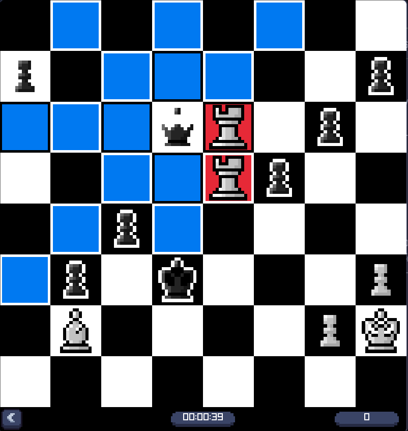

PuzzledChess
Sharpen your tactics against real positions. PuzzledChess deals random puzzles from the Lichess open puzzle database, plays your moves back to you with animation and sound, and scores you on how fast you find them.
30,000 puzzles are bundled in the download. No extra setup needed.

Download
Pre-built binaries for both platforms. Each archive already contains a curated puzzle dataset, so the game is playable the moment you open it.
Windows
64-bit Windows 10 or newer. Statically linked, so there are no extra runtime DLLs to keep alongside the executable.
PuzzledChess-windows-x86_64.zip 64-bit · Windows 10+ All releases & checksums versions, SHA256SUMS.txtLinux
Built on Ubuntu and portable across modern glibc distributions. raylib is linked statically, so the only requirements are OpenGL and the usual X11 libraries.
PuzzledChess-linux-x86_64.tar.gz 64-bit · glibc based distros Build status every push is compiled for both platformsPuzzledChess and assets/ side by side. Run
the game from that folder and keep the two together — the puzzle
database, textures and sounds are all loaded relative to the working
directory.
Game modes
Pick a mode from the main menu. Faster solves are worth more points, from 1000 for an instant answer down to 100 if you take your time.
Controls
| Input | Action |
|---|---|
| Left click | Select a piece, then a highlighted square |
| → | Play the next expected move for you |
| Esc | Close the window |
One Shot returns to the menu after a wrong move, Timed when the 60 seconds run out. No Limit runs until you close the window.
Where the puzzles come from
Positions are sampled from the Lichess open puzzle database, which ships roughly 4 million positions mined from real games.
A random 30,000 puzzle subset is bundled so the download stays small.
For the full collection, run scripts/fetch_puzzles.sh and
point the game at it with the PUZZLEDCHESS_PUZZLES
environment variable.
Build it yourself
All you need is CMake, a C++ compiler and raylib 5.x.
# Linux (Arch / CachyOS) sudo pacman -S base-devel cmake raylib # Linux (Debian / Ubuntu) sudo apt install build-essential cmake libraylib-dev # macOS brew install cmake raylib git clone https://github.com/redsteadz/PuzzledChess.git cd PuzzledChess cmake -S . -B build -DCMAKE_BUILD_TYPE=Release cmake --build build -j ./build/bin/PuzzledChess
No raylib installed? Let CMake fetch and compile it for you:
cmake -S . -B build -DPUZZLEDCHESS_USE_BUNDLED_RAYLIB=ON cmake --build build -j
cmake/toolchain-mingw-x86_64.cmake.
Add -DCMAKE_TOOLCHAIN_FILE=cmake/toolchain-mingw-x86_64.cmake
-DPUZZLEDCHESS_STATIC_RUNTIME=ON to get a standalone .exe.